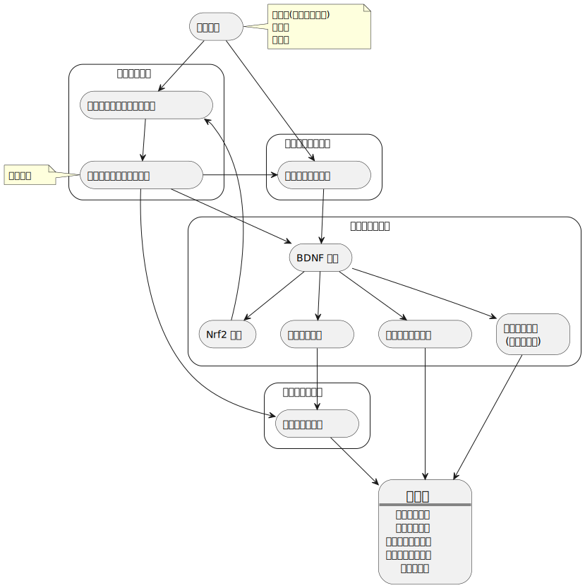
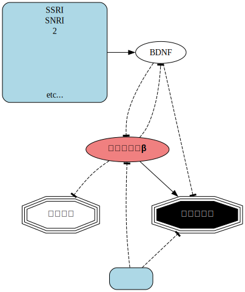

うつ病 30 年生レジュメ
1. はじめに 【注意事項】
- 感情的動揺、つらい記憶のフラッシュバック、病状の悪化が感じられたら退出
- 無理をしてはいけない
2. 自己紹介
3. うつ病とはどんな病気なのか理解する
3.1. 医学的説明
- モノアミン仮説
- 神経炎症仮説
- 神経可逆性仮説
- コルチゾール仮説
- その他

3.2. 患者から見たうつ病とは
- 他の病気と同じくいつの間にかなっている
-
患者から見たうつ病の特徴
- 最悪死亡する
- 障害者になることも
- なぜこのようなことになるのか？
- 当事者本人が自分が急性期なのかどうなのかも判断が難しい
- 周囲の助けが必要
- 診察への促し
- 病院への付き添い
- 緊急を要するときの医療保護入院
- その他
- 苦しいので助けを求めることが多い
- 当事者も当事者の家族も医療を頼りましょう
- うつ病も病気なので合理的に治療に取り組みましょう
4. うつ病の治療法
4.1. 治療に取り組むうえでの注意点
治療は遅効性なのであせらない、あわてない。また病状などにより、どうしてもできない時はあるので、できなかった日や期間があるくらいで自分を責めない。
4.2. 医学的介入 (詳細は必ず主治医に)
- 薬物療法
- SSRI や SNRI 等の抗うつ剤
- リチウム
- 第 2 世代抗精神病薬など (うつ病適応のもの)
- その他
- 電気けいれん療法
- 反復経頭磁気刺激療法
- その他
4.3. 心理学的介入 (詳細は必ず主治医に)
- 診察室などで行われる言語的介入
- 認知行動療法
- 精神分析療法
- その他
4.4. 医師より出される課題
- 運動療法
- 高強度インターバル・トレーニング
- 持久力持続トレーニング (有酸素運動)
- 温熱療法 (研究途上)
- その他
4.5. 上記治療法がどのようにうつ病に働くのか

4.6. セルフケア
4.6.1. セルフケアへの期待と注意
- 医療や医療制度、心理療法や心理療法を取り巻く制度上の限界の補完を期待するが、過度の期待はしない。
- 症状に対する即効性のある特別な何かではない。ましてや医療の代りではない。
- またやりたくてもできないという経験と苦しみもこれまでに嫌というほど味わってきてるので、仮に何もできなくても自分を責めない。
4.6.2. セルフケアの主目的
ストレスケア
4.6.3. セルフケアのメニュー例
4.6.3.1. 生活習慣を整える
- 早寝早起き
- 充分な睡眠
- 日光をあびる
- アルコールを避ける
- 煙草を避ける
- カフェインコントロール
- その他
4.6.3.2. 運動による総合的な健康状態の改善
例:
- 高強度インターバル・トレーニング
- 持久力持続トレーニング
- ウォーキング
- 水泳
- サイクリング
- 登山
- ハイキング
- 散歩
- フォトウォーク
- バードウォッチング
- 自然観察
- 掃除、洗濯、買い物などの日常生活動作 (ADL = BADL + IADL)
- その他
4.6.3.3. レジャーやレクリエーションによる QOL 改善
例:
- 音楽
- 読書
- 旅行
- デイトリップ
- 4.6.3.2. 運動内容
- その他各種レジャー
4.6.3.4. リラクゼーションによるストレス緩和
例:
- アンビエント系の音楽
- あまり激しくないクラシック
- 風呂、温泉、サウナなどの入浴
- 公園などで何も考えずに過す (スマホは off にするのが効果的)
- マインドフルネス
- 瞑想
- 座禅
- お寺のお堂でただ坐る
- その他
4.6.3.5. 人として成熟を目指すことでのストレス耐性向上
自分自身の思考パターン、判断のパターン、感情の見える化と客観化、分析により、より多角的な人格発展の模索を図る。
例:
- 日記、ジャーナリング、バレットジャーナル、日々のメモ記録などの記録と振り返りによる自己理解の向上
- Web 日記 (非公開でよい)の記載と振り返りによる自己理解の向上
- ロジックツリー、マインドマップ、KJ 法などによる思考整理と俯瞰、振り返り (案外仕事で身に付けたスキルが役立つ)
- ツッコミノートによる認知の修正と柔軟化 (自分の認知パターンをデバッグするような感じで)
- その他
4.7. 個人的に役に立ったと実感できる事柄
- 自然科学や技術の本、雑誌、テレビ番組好き
- 精神医学
- 心理学
- 数学
- 統計学
- 物理
- 化学
- 生物
- 地学
- COSMOS by カール・セーガン
- NHK 驚異の小宇宙人体シリーズ
- Newton (雑誌)
- Nature
- その他好奇心の赴くままに
- 仕事で身に付けた様々な考え方やスキル
- 情報整理スキル
- 情報分析スキル
- 情報再構成スキル
- 効率的な記録スキル
- 抽象化スキル
- モデリングスキル
- モデル分析スキル
- モデル実装スキル
- デバッグスキル
- システム構築全般
- その他
4.8. 治療にあたって個人的にやってきたこと
- 12 年前の事件以降徐々にうつ病死しないことにステータスを全振りする方向に
- まずは自分自身を 1 患者として、1 治療対象として認識して観察するように努める
- エビデンスに基づく医療情報を重視すること
- 医療の専門家から提供される治療メニューの意味的理解
- 状態把握の用語変換
極力医療用語に変換する
ex) 死にたい ➡ 希死念慮が生じている
死にたいという表現は実行化の閾値を下げるので危険
医療用語にすることで対策つまり治療に結び付く
死にたいという表現は情動の強度を伝えるための補助表現に格下げする
ロストコントロール対策に大きく寄与する
- 自分の危険信号を把握しておく
個人としては「もういいや」という言葉が頭をよぎったら、それに支配されていなくても赤ランプが点滅してアラートが鳴っている状態
入院をすぐに決意しないとかなり危険
4.9. 最後に : 学びからの素人による仮説 (エビデンスはない)
うつ状態は本来人間が生存するうえでかかせない機能なのではないか。
うつの主症状というと、気分の塞ぎ込み、行動抑制、倦怠感とあるが、これらは身体的な疾患や外傷などであっても生じるし、精神的なストレスでも発生する。
うつ病への知見を深めていくと、うつ病も他の疾患と同様に、人間のホメオスタシスが著しく損われた状態であるとしか言えなくなるのだけれど、神経炎症仮説もあることや、うつ病の病態から人間という生物全体を俯瞰すると、うつ反応はもともと人間に備わった自然な自己防衛反応なのではないかという疑念が生じる。
怪我をしたときに痛みを感じることで患部を保護しようと意識が働くように、うつ状態の諸症状で脳が身体や脳自身に休めとサインを送っているのではないだろうか。
ところがストレスが継続することで脳の炎症も慢性化してしまい、クリニックなどにかかる必要があるような心因反応としてのうつに移行し、さらにストレスや炎症が継続することで、脳神経細胞の神経新生が阻害され、シナプスの失調状態が進み、アポトーシスも進行してしって、所謂うつ病へと移行してしまっているのではないだろうか。
専門家に確認したら「それはどんな病気でも一緒ですよ」と返事が返ってくるのか「それはエビデンスが存在しませんねぇ」と返ってくるのか、どのような返事が返ってくるのかはわからないけれども、素人ゆえに市販の本やさまざまな文献には見当らないことが頭をよぎった。
治療とは直接関係はないのだけれど、少し専門家に訊いて確認したいような気がする。